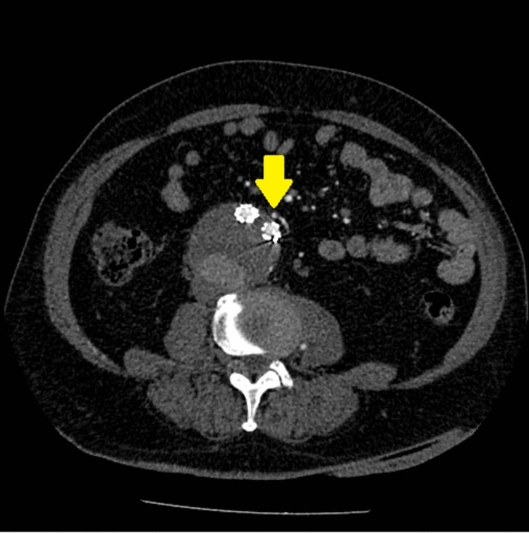

840 — AAA sau EVAR: Endoleak I–V & PAD / EVAR surveillance
Tags: pattern:endoleak vung:DMC-bung protocol:CT-3-pha
Mức chắc chắn (certainty): tổng hợp y văn (literature synthesis) — nhóm tự biên từ y văn mở, chưa gắn ca nguyên văn đơn lẻ.
1. Tổng quan — túi còn áp lực là còn vỡ + pha muộn mới thấy type II
- Endoleak: máu còn vào túi phình sau EVAR — TẠI SAO type II (nhánh ngược: mạc treo dưới/thắt lưng) cần pha muộn 70–120s: dòng chậm, thì động mạch chưa tới.
- Ngưỡng mổ AAA: nam > 5,5 cm / nữ > 5,0 cm / lớn > 0,5 cm/6 tháng — TẠI SAO Laplace: áp lực thành ∝ bán kính, túi càng to càng dễ vỡ.
- Type I (cổ) + III (khớp) = áp lực hệ thống → sửa ngay; type II + V (căng túi) theo dõi khi túi không lớn.
2. Gamut túi phình sau EVAR (Gamut)
- Cổ/trên-dưới + sớm + túi lớn: type I — cuffs/ống nới rộng cấp cứu.
- Nhánh ngược + muộn + túi lớn dần: type II — nút nhánh vào-ra (cả 2 đầu!) hoặc mổ mở.
- Khớp graft + sớm: type III — nối thêm đoạn.
- Không thấy + túi lớn: type V — tăng áp lực + theo dõi sát/mổ.
3. Bảng so sánh phân biệt (ma trận đối chiếu)
| Thực thể (entity) | Hình ảnh điển hình | Chốt vào (rule-in) | Chốt loại (rule-out) | Gợi ý xác nhận |
|---|---|---|---|---|
| Type I | Cổ trên/dưới + sớm + áp lực cao | Rò cổ + túi lớn nhanh | Muộn + nhánh → II | Sửa cấp cứu |
| Type II | Nhánh ngược + muộn 70–120s + túi lớn dần | IMT/thắt lưng + muộn | Sớm + cổ → I | Nút 2 đầu/mổ mở |
| Type III | Khớp graft + sớm + tách đoạn | Rò khớp + X-quang | Nhánh → II | Nối thêm |
| Type V | Túi lớn + không thấy rò | Loại trừ I–IV + căng | Thấy rò → I–IV | Theo dõi/mổ |

Túi 6 cm lớn dần 0,2 cm/năm sau EVAR 14 năm. Nguồn: Giannakopoulos et al., Cureus 2024 Fig. 1, CC BY 4.0.4. Protocol theo dõi EVAR
- CTA 3 pha (non-contrast + động mạch + muộn 70–120s) định kỳ; thiếu pha muộn = sót type II, thiếu non-contrast = nhầm vôi!
flowchart TD
A[Sau EVAR + túi lớn] --> B{CTA 3 pha thấy gì?}
B -->|Cổ/khớp + sớm| C[Type I/III: sửa ngay]
B -->|Nhánh + muộn| D[Type II: nút/mổ]
B -->|Không thấy| E[Type V: theo dõi]
5. Cạm bẫy
- Thiếu pha muộn sót type II lưu lượng thấp — 3 pha là luật.
- Vôi túi tưởng rò — non-contrast đối chiếu mới kết luận.
- Type II flow-through (vào + ra) nguy cơ cao — nút cả 2 đầu, đừng nút 1 đầu!
6. Tự lượng giá — Blind Quiz
Ca 1 — Sau EVAR 14 năm + túi 6 cm lớn dần. Đọc CTA.
- Hỏi: type mấy? Nguồn vào đâu? Nút hay mổ mở?
Bấm để hiện đáp án
- Dấu hiệu (findings): ĐM mạc treo dưới + thắt lưng trái còn thông vào túi.
- Chẩn đoán (diagnosis): endoleak type II dòng chảy qua — nút 2 đầu thất bại → mổ mở thắt + giữ graft (túi lớn dần!).
- Nguồn: Giannakopoulos et al., Fig. 1, CC BY 4.0.
Ca 2 — Rò cổ trên + túi lớn nhanh sau EVAR: type mấy? Xử trí? (Bảng mục 3.)
Bấm để hiện đáp án
- Type I: sửa cấp cứu (áp lực hệ thống = vỡ!).
Bài liên quan chéo
- 800 – Tổng quan Tim mạch
- 170 – Phình ĐMC (ngưỡng mổ)
- 920 – Nút mạch (nút type II)
Không dùng để chẩn đoán độc lập khi chưa có người hướng dẫn.